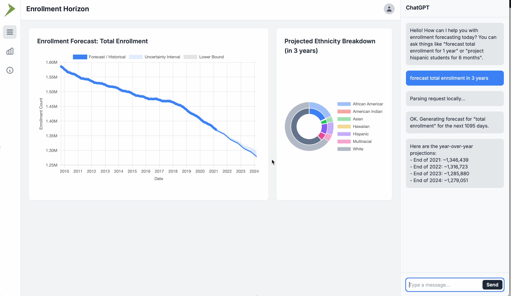
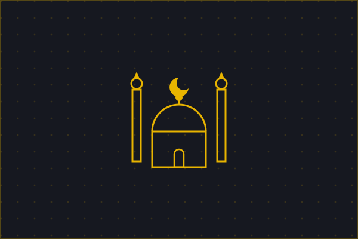

PROJECT NOTES
Port Authority of NY & NJ
Operational systems & full-stack engineering
Building live GIS monitoring tools that help operations teams track facilities and respond to issues.
FORWARD DEPLOYED ENGINEER
I build forecasting tools, automation pipelines, and full-stack applications. My work spans Python, AI deployment, and the hardware on my desk.
01 / ABOUT
I work directly with the teams who use the software.
I’m Syed Badr, a Forward Deployed Engineer working alongside client teams to take software from architecture to production. My work spans live GIS monitoring, AI forecasting, and the automation that keeps complex systems running.
My background is in Computer Science, Cybersecurity, and QA automation. I also contribute to open-source projects, design 3D-printed parts, and build hardware for coffee grinders and community spaces.
View my résumé ↗02 / EXPERIENCE
Engineering, deployment, and QA automation.
Operational systems & full-stack engineering
Building live GIS monitoring tools that help operations teams track facilities and respond to issues.
AI-driven forecasting & deployment
Taking forecasting platforms from architecture to production with Python, Flask, and AI-powered insights.
QA automation & engineering
Automating regression testing with Cypress and supporting reliable delivery through Jenkins pipelines.
03 / SELECTED WORK
Software, hardware, and open-source contributions.

Helping schools plan for what’s next with time-series forecasts and interactive data exploration.
Turning a timed coffee grinder into a precision weight-based system with custom hardware.
Connecting time-series forecasting with clear, AI-generated recommendations people can act on.

Contributing software, security audits, and hardware designs to an open masjid management platform.
Connecting data sources, ML inference, and LLM summaries in automated reporting workflows.
Forecasting patient volume and resource demand, with plain-language allocation guidance.
A reliable daily prayer-time player built around Python, a Raspberry Pi, and a little automation.
Verifying file integrity on the Ethereum testnet with a decentralized, tamper-proof record.
04 / REFERRALS
Syed stands out as an exceptional engineering talent. He made a tremendous impact by automating our test cases with Cypress, reducing our regression cycle from 2 weeks to just 2 hours and bringing measurable cost savings to our QA operations.
Syed's strong technical abilities in Cypress automation and troubleshooting Jenkins pipelines were impressive. His proactive attitude and commitment to quality were evident in every project, making him a valuable asset to our team.
From the very beginning, Syed impressed me with his technical skills and eagerness to learn. He consistently delivered high-quality work, often taking the initiative and approaching every task with a strong sense of responsibility. He would be a valuable addition to any team.
Syed showed strong technical skills from day one, jumping into a variety of projects across different languages. He's a great team member: curious, reliable, and always thorough in his work, seeing projects through to the finish line.
Syed's ability to quickly absorb new concepts and apply them effectively stood out immediately. He's a great collaborator who approaches challenges with a positive, solutions-oriented mindset. Any team would be lucky to have someone with his drive, curiosity, and professionalism.
OPEN TO NEW OPPORTUNITIES
Contact me about engineering roles, project work, or open-source collaboration.
Say hello hello@sbadar.com